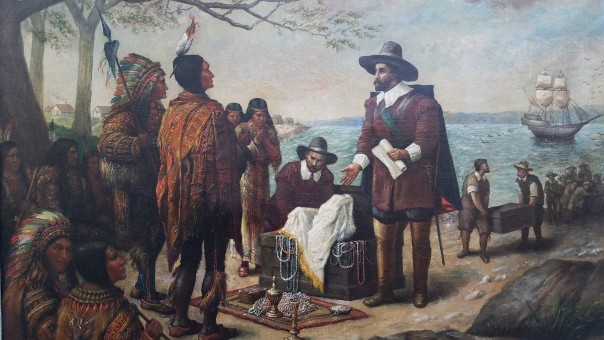
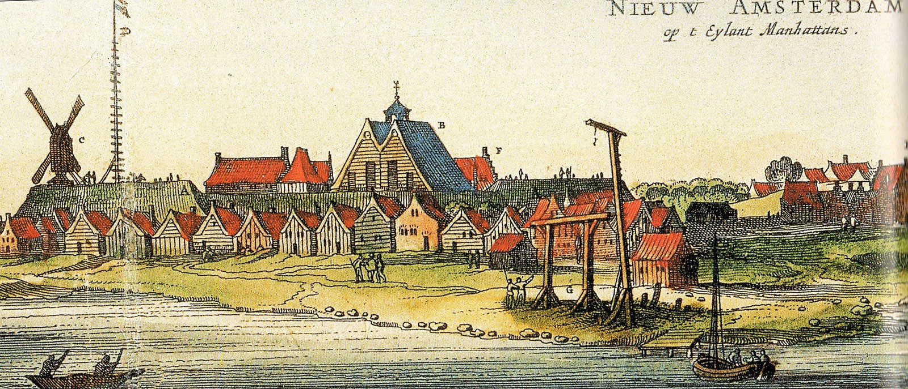

Начало.
История создания города Нью-Йорк уходит в глубь веков на 11 тысяч лет назад. Именно тогда на территории современного города появились первые люди, они охотились на диких животных в современных окрестностях города. Город представлял собой дикие леса, как было и как стало вы можете увидеть на следующей фотографии:

Как утверждают историки, полноценное поселение на территории Нью-Йорка сформировалось около 3 тысяч лет назад. Коренные жители – индейцы, впервые увидели европейцев в первой половине 16-ого века. После этого началась череда «открытий» Нью-Йорка различными европейцами, а затем и формирование первого поселения. В этой статье мы расскажем вам историю Нью-Йорка кратко и по годам, от основания до современности.
Первый европеец в Нью-Йорке.
Первый европеец, побывавший в Нью-Йорке — Джованни да Верраццано (Giovanni da Verrazzano). Это случилось в 1524 году. Иногда его фамилию коверкают как Верразано. Джованни – знаменитый итальянский путешественник, служивший Франции. Именно он первым побывал в Нью-Йорке, но дальше залива Наррагансетт не проплывал, поэтому можно сказать, что всей территории современного города он не увидел.
В наши дни в Нью-Йорке есть мост, носящий имя итальянского мореплавателя. Этот мост расположен ровно в том месте, до куда в 1524-ом году он доплыл.
1609 год — прибытие англичан.
Первым англичанином, побывавшим в Нью-Йорке, стал мореплаватель сер Генри Гуздон (Henry Hudson). Гудзон – это одна из самых знаменитых рек не только Америки, но и мира. Имя реке дали в честь английского мореплавателя, после того, как именно Генри открыл ранее неизвестную для европейцев реку. Генри Гудзона считают первооткрывателем Манхэттена. Остров был открыт во время Ост-Индийской компании в 1609 году. Мореплаватель не остановился на прибрежной зоне, и поднялся верх по реке Гудзон, исследовав восточные территории Северной Америки.
1613 год — прибытие голландцев.
История современного Нью-Йорка начинается именно с прибытия голландцев, так как именно они основали там первую колонию в 1614-ом году. Но этому предшествовало случайное событие. В 1613-ом году корабль голландского торговца по имени Андриан Блок (Adriaen (Aerjan) Block) сгорел близ современной территории Нью-Йорка, и он был вынужден сойти на берег. Индейцы помогли капитану и его команде пережить зиму, а также помогли построить корабль.

1614 год — основание колонии Новый Амстердам.
Новые земли понравились голландцам, и в 1614-ом году они основали колонию недалеко от современного Олбани. В 1625-ом году на Манхэттен прибыли новые семьи из Голландии и в этом же году был возведен форт для защиты.

Дата основания Нью-Йорка.
Официально считается, что Нью-Йорк возник (был основан) в 1624 году. Но вы теперь знаете, что поселение появилось намного раньше.
1626 год – покупка Манхэттена у индейцев.
Знаменитое событие – покупка всего острова Манхэттен у индейцев за 24 доллара произошла в 1626-ом году. Эту сделку провернул Петер Минёйт (Peter Minuit), государственный служащий, а в последствии первый губернатор Новой Голландии.

Справедливости ради отметим, что индейцы, согласно данным историков, не понимали, что они продают землю. Передача прав на землю не входила в соглашение, и оно до сих пор является предметом споров среди историков. Некоторые специалисты называют эту сделку аферой тысячелетия.
1626-ой год связан и с другим фактом – «начало» рабства в Америке. В этом году Голландия завезла первых чернокожих африканских рабов на континент.
1627-1663 года – развитие города.
Уже к 1628-ом году численность жителей Новой Голландии насчитывала 270 человек. Следующие несколько десятилетий до 1663-ого года в город прибывали различные жители. Так например, в 1639-ом году прибыл некий Йоханнес Бронк из Дании. Сегодня в его честь назван один из районов Нью-Йорка – район Бронкс. В 1654-ом году в Нью-Йорк прибыли 23 еврейских беженца из Испании и Португалии, которые знамениты тем, что они основали в Нью-Йорке Шеарит Израэль.
Жители занимались торговлей. Как правило, торговля была спекулятивной, они выменивали у индейцев различные товары. Самый популярный товар, отправляемый в Европы – бобровые шкуры. Из них в Европе делали шапки и теплую одежду.
Первые проблемы с англичанами начались в 1657 году, когда в Новой Голландии высадились первые английские квакеры (Quakers). Это религиозное сообщество, родом из Англии, донесло до Британской Империи важность данных территорий и уже в 1664-ом году в Нью-Йорке высадилась английская армия.
1664 год – захват и переименование города в Нью-Йорк.
Англичане высадились на территории современного района Бруклин. Губернатор и жители не оказали никакого сопротивления армии Ричарда Николса, и в 1664-ом году управление городом перешло англичанам. Один из первых указов нового губернатора стало переименование города.
Название – New York, дали англичане. Город назван в честь брата короля герцога Йоркского. Пожалуй, факт, почему Нью-Йорк называют именно так, один из немногих фактов, о которых историки не спорят.
1673-1674 года – возвращение города Голландии.
В 1673 году в результате войны Голландия смогла вернуть контроль над городом. Но уже в следующем году его вновь утратила.
1688-1691 года – революция и захват города Германией.
Под правлением англичан город практически не развивался. Горожане Нью-Йорка воспользовались революцией в Англии в 1688-ом году, и правление перешло к торговцу немецкого происхождения по имени Джейкоб Лейслер. Ему вместе с горожанами удалось захватить форт Джордж (при голландцах он назывался форт Амстердам) и на 2 года установить в городе свое правление.
В 1691-ом году Англия подавила все восстания, ситуация стабилизировалась, а Джейкоб Лейслер был повешен. Нью-Йорк вновь стал английским городом.
1700-ые – правление Британии.
После возвращения контроля над Нью-Йорком в 1691-ом году Англия начала развивать свою колонию. В 1720-ом году была построена первая верфь, которая дала мощный толчок к развитию города.
К 1760-ым годам Британия принимает решение увеличить сборы с колоний, и принимает в 1764-ом так называемый «Сахарный акт». Он повышал налоги на торговлю патокой и сахаром. В 1765-ом году вводят гербовый сбор. Все это приводит к постепенному нарастанию недовольства местного населения. В 1767-ом вводятся дополнительные пошлины для колоний. После этого впервые происходят вооруженные стычки с солдатами из Великобритании. Ситуация обостряется и в 1774-ом году происходит Нью-Йоркское чаепитие, начинается война за независимость.
1774-1783 год – война с Англией и независимость.
Англия перебросила около 500 кораблей к Нью-Йорку после начала войны за независимость. На кораблях размещалось 32 тысячи британских солдат под командованием Уильяма Хоу. Американскими войсками управлял Джордж Вашингтон. В самом начале войны за независимость Нью-Йорк был потерян и англичане полностью восстановили над ним свой контроль.
Нью-Йорк удалось вернуть лишь в результате масштабного поражения англичан. 3 сентября 1783-ого года англичане признали поражение и подписали мирный договор, получивший название Парижский. Оккупация Нью-Йорка полностью завершилась чуть позже, 25 ноября 1783-ого года. В этот день в Нью-Йорк вошли американские войска.
1788 год – Нью-Йорк становится столицей США.
Сегодня столицей США является Вашингтон, а не город Нью-Йорк. Но 13 сентября 1788 года столицей Соединенных Штатов Америки стал Нью-Йорк. В Нью-Йорке была проведена первая инаугурация президента США – Джорджа Вашингтона в 1789 году.
1790-1840 года – развитие города.
В 1790-ом году Нью-Йорк теряет звание столицы, она переносится в Филадельфию. В 1790-ом году в Нью-Йорке проживало около 33 тысяч человек, но уже через 30 лет в городе насчитывалось более 130 тысяч человек. Большинство из них переехали в город. Несмотря на перенос столицы из Нью-Йорка, за городом закрепился статус одного из самых главных в США.
В 1811-ом году был подготовлен первый градостроительный план. Именно благодаря этому плану сегодня мы имеет практически ровные улицы, с перпендикулярным пресечением. В последствии план несколько раз переделывали, но его идеи до сих пор лежат в основе архитектуры города.
1840-1856 года – прибытие ирландцев.
В 1840-ом году в Ирландии разразился кризис и десятки тысяч ирландцев бежали в США, в попытке спастись от голода. Многие направлялись прямиком в Нью-Йорк. Из-за разницы менталитетов, а также по причине безграмотности, мигранты не смогли устроиться в обществе. Они начали собираться в группы, уровень преступности в Нью-Йорке значительно вырос. Лишь к 1856-ом году удалось стабилизировать ситуацию.
1861-1865 – гражданская война в США.
В 1861-ом году в США началась гражданская война. В результате которой погибли тысячи людей, но Нью-Йорк прошел через войну относительно спокойны. Жители не хотели втягиваться в войну и на призывы к действиям выходили на митинги. За время войны в Нью-Йорке погибло чуть больше 100 человек, что несоизмеримо меньше, чем в других частях страны.
1880-1919 года – миграционный бум в США.
Конец 19-ого века знаменит сразу 3 событиями:
- Начало миграционного бума в США
- Постройка первого небоскреба
- Возведение Статуи Свободы
По оценкам историков, в период с 1880-1919-ых годов (самая активная фаза миграции), через Нью-Йорк прошли более 17 миллионов мигрантов. В 1886-ом году Нью-Йорку была подарена Статуя Свободы, ставшая символом миграционного бума. Также начался бум строительный, но Нью-Йорк не смог сорвать пальм первенства и первый небоскреб был возведен в Чикаго. Первый небоскреб в Нью-Йорке (Тауэр-билдинг) появился лишь в 1889-ом году, благодаря архитектору Бредфорду Гилберту.
1925-1945 года – кризис и война.
В 1925-ом году Нью-Йорк стал самым большим городом мира. Население Нью-Йорка сегодня уступает многим городам, но в том году это был самый большой город. Отняв первое место у Лондона.
Великая Депрессия и сбой на Нью-Йоркской бирже пошатнули положение города, но не сломили его. В 1930-ых годах город переживает трудные времена. В это время заканчивают возведение Крайслер Билндинг, а также возводят другие архитектурные сооружение в характерном для этого времени стиле – арт-деко.
1946-1977 года – послевоенный период и упадок.
В 1945-ом году война кончилась и начался экономический бум. Который закончился ближе к 1970-ым годам. В это время преступность в Нью-Йорке выходит на небывалый уровень. Город стремительно теряет популярность, дошло вплоть до того, что жители начали покидать свои дома. В 1975-ом году Нью-Йорк стоял на грани банкротства и правительство ввело жесткие меры.
Современная история.
Современная история города берет свое начало с 1978-ого года. Начиная с него город постепенно начал восстанавливаться. В 1980-ых обрела свою всемирную известность Уолл-Стрит и Нью-Йорк получил титул экономической столицы мира. В 80-ых годах расцветает культура, появляются знаменитые мюзиклы на Бродвее. Начинает развиваться индустрия туризма.
В 2001-ом году происходит серия страшных террористических актов, которые разделяют историю Нью-Йорка на до и после. Сегодня в городе есть мемориал 9/11 . В 2003-ьем году в Нью-Йорке произошло массовое отключение электричества, известное как Northeast Blackout of 2003, ставшее причиной массовых проблем. По всему городу отключились светофоры. Транспорт в Нью-Йорке и без того работает в сложных условиях, но без светофоров город буквально встал.
В истории создания города Нью-Йорк насчитываются десятки пробелов, которые вызывают вопросы и являются предметом жарких дискуссий среди историков. Чтобы увидеть все своими глазами, мы рекомендуем побывать в городе лично. Для этого вам потребуется виза в США, а для нее потребуется купить страховку. Хотя поездка и не дешевая, но общие расходы на путешествие в США из Москвы не такие большие. Тем более, что есть прямой рейс из Москвы от Аэрофлота, есть и другие способы, как добраться. И это позволит вам прилететь и увидеть современный Нью-Йорк и на месте узнать историю создания города.